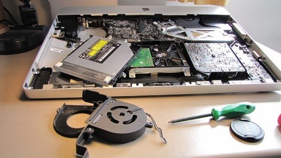
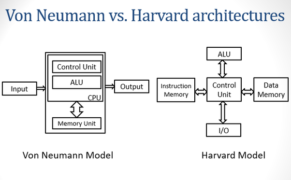
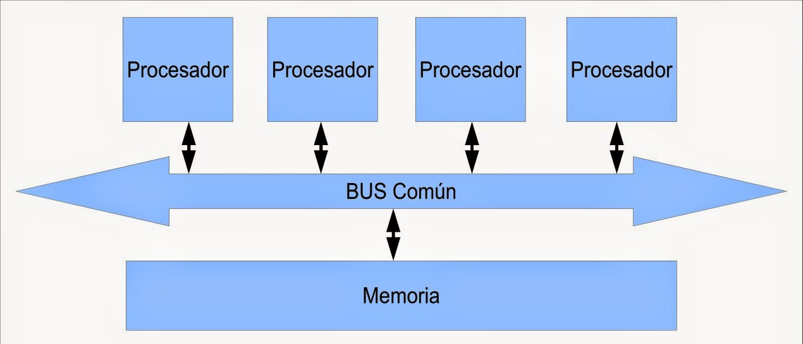
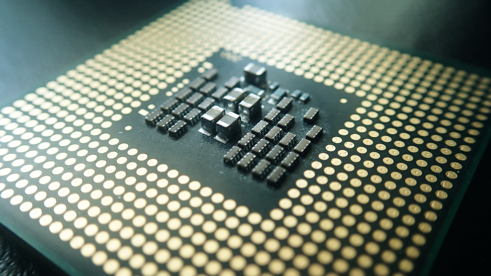
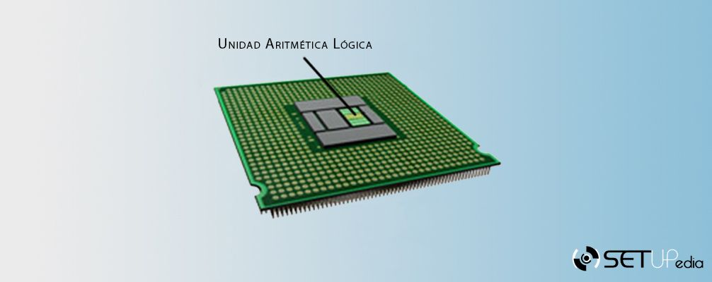
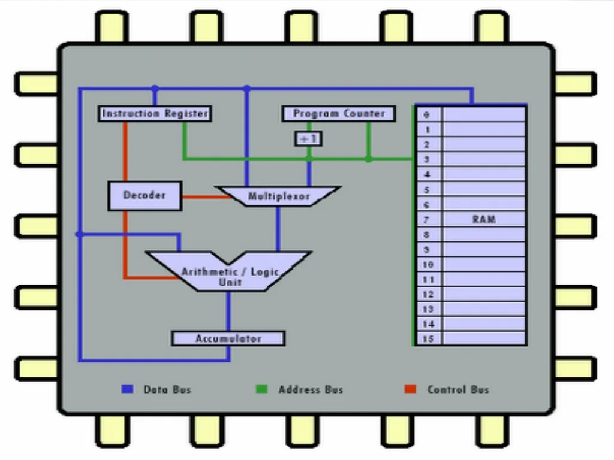
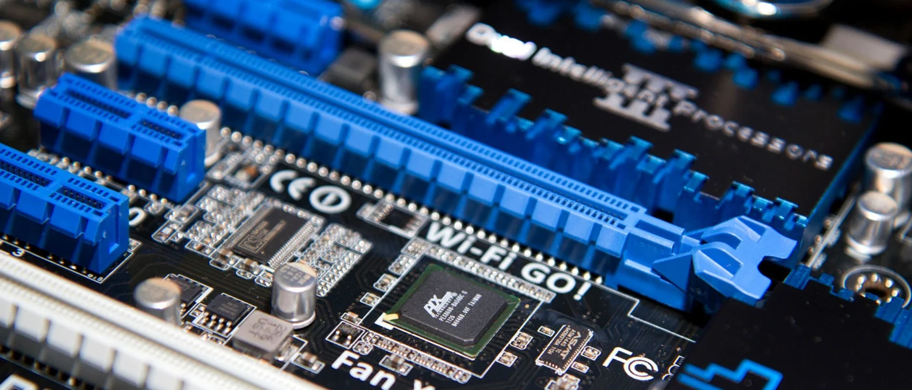

1.1 Modelos de arquitectura de computo.
Un modelo de arquitectura de cómputo es una representación conceptual de cómo está organizado y diseñado un
sistema informático. Este modelo describe la estructura, los componentes y las interacciones entre ellos
dentro del sistema. Estos modelos son utilizados por los diseñadores de hardware y software para entender,
diseñar y desarrollar sistemas informáticos eficientes y funcionales.

1.1.1 Clasicas.
Estas arquitecturas se desarrollaron en las primeras computadoras electromecánicas y de tubos de vacío.
Hay dos arquitecturas distintas relacionadas con el uso y distribución de la memoria: Arquitectura de Jonh
Von Neumman y Arquitectura Harvard.
- Arquitectura Von Neumann
La unidad central de proceso (CPU), está conectada a una memoria principal única (casi
siempre sólo RAM) donde se guardan las instrucciones del programa y los datos.
A dicha memoria se accede a través de un sistema interconexión de buses único (control, direcciones
y datos).
En un sistema con arquitectura Von Neumann el tamaño de la unidad de datos o instrucciones está
fijado por el ancho del bus que comunica la memoria con la CPU.
El tener un único bus hace que el microprocesador sea más lento en su respuesta, ya que no puede
buscar en memoria una nueva instrucción mientras no finalicen las transferencias de datos de la
instrucción anterior.
- Modelo Harvard
La arquitectura Harvard es un modelo de diseño de computadoras que se caracteriza por
tener buses de datos separados para las instrucciones y los datos. A diferencia del modelo Von
Neumann, donde las instrucciones y los datos comparten la misma memoria, en la arquitectura Harvard,
las instrucciones y los datos se almacenan en diferentes memorias físicas y se accede a ellos a
través de buses independientes. Esto permite que el procesador acceda simultáneamente a
instrucciones y datos, lo que puede mejorar el rendimiento en ciertos casos, como en aplicaciones
embebidas o de sistemas embebidos donde la velocidad es crítica.

1.1.2 Segmentadas.
Las arquitecturas segmentadas son diseños de procesadores que dividen el proceso de ejecución de
instrucciones en varias etapas secuenciales, cada una realizando una parte específica del trabajo. Estas
etapas suelen incluir la recuperación de instrucciones, la decodificación, la ejecución y el almacenamiento
de resultados. Al dividir el proceso en etapas, se pueden ejecutar múltiples instrucciones simultáneamente,
lo que aumenta la eficiencia del procesador y permite un mejor rendimiento. Sin embargo, la implementación
de una arquitectura segmentada puede ser compleja y puede requerir una cuidadosa sincronización para evitar
problemas de dependencias entre instrucciones. Ejemplos de arquitecturas segmentadas incluyen el pipeline de
instrucciones y el pipeline de datos.

1.1.3 De multiprocesamiento.
Las arquitecturas de multiprocesamiento son sistemas informáticos que utilizan múltiples procesadores o
núcleos de procesamiento para realizar tareas de manera concurrente. Estos procesadores pueden trabajar de
manera independiente o colaborar entre sí para ejecutar programas y procesar datos de manera más rápida y
eficiente. El multiprocesamiento puede ser simétrico (SMP), donde todos los procesadores comparten la misma
memoria y tienen acceso a los mismos recursos, lo que facilita la programación y la escalabilidad del
sistema; o asimétrico (AMP), donde los procesadores pueden tener roles diferentes y acceder a recursos
diferentes, lo que puede ser útil en aplicaciones específicas que requieren tareas especializadas. Las
arquitecturas de multiprocesamiento son utilizadas en una amplia gama de sistemas, desde servidores de alto
rendimiento hasta dispositivos móviles y sistemas embebidos.
Las CPU de multiprocesamiento se clasifican de la siguiente
manera (Clasificación de Flynn):
- SISO - (Single Instruction, Single Operand)
Computadoras Monoprocesador.
- SIMO - (Single Instruction, Multiple Operand)
Procesadores vectoriales, Exenciones MMX
- MISO - (Multiple Instruction, Single Operand) No
implementado
- MIMO - (Multiple Instruction, Multiple Operand)
Sistemas SMP, Clusters, GPUs

1.2 Analisis de los componentes.
Los programas cada vez más grandes y complejos demandan mayor velocidad en el procesamiento de información,
lo que implica la elección de microprocesadores más rápidos y eficientes.
1.2.1 Arquitecturas.
Los programas cada vez más grandes y complejos demandan mayor velocidad en el procesamiento de información,
lo que implica la elección de microprocesadores más rápidos y eficientes.
- Arquitectura CISC
La arquitectura CISC (Complex Instruction Set Computing) se caracteriza por tener un conjunto de
instrucciones complejas y variadas que permiten realizar múltiples operaciones en una sola
instrucción. Estas instrucciones pueden ejecutar operaciones complejas directamente en hardware, lo
que puede simplificar el desarrollo de software pero a costa de una mayor complejidad en el diseño
del procesador.
Los procesadores CISC suelen tener un conjunto de instrucciones grande y
diverso, lo
que puede hacer que la decodificación y ejecución de instrucciones sea más lenta en comparación con
las arquitecturas RISC. Sin embargo, la arquitectura CISC puede ser beneficiosa en aplicaciones que
requieren una alta densidad de código, como sistemas embebidos y dispositivos de red.
- Arquitectura RISC
Por otro lado, la arquitectura RISC (Reduced Instruction Set Computing) se caracteriza
por tener un conjunto de instrucciones reducido y simple, diseñado para ejecutar instrucciones de
manera eficiente y rápida. Los procesadores RISC tienden a tener un ciclo de instrucción fijo y una
arquitectura altamente optimizada para ejecutar un conjunto básico de instrucciones de manera
eficiente, delegando operaciones más complejas al software. Esto puede resultar en una ejecución más
rápida de programas y un rendimiento más predecible, aunque puede requerir más código de programa
para realizar tareas complejas. La arquitectura RISC es comúnmente utilizada en sistemas donde se
valora el rendimiento y la eficiencia energética, como en servidores de alto rendimiento, estaciones
de trabajo y dispositivos móviles.
1.2.1.1 Unidad Central de Procesamiento.
La CPU (Unidad Central de Procesamiento) es el componente principal de una computadora y se encarga de
ejecutar las instrucciones de los programas y manipular los datos. Consiste en varias unidades funcionales,
incluyendo la Unidad de Control, que interpreta y ejecuta instrucciones del programa; la Unidad Aritmético
Lógica (ALU), que realiza operaciones aritméticas y lógicas en los datos; y los registros, que almacenan
temporalmente datos e instrucciones durante la ejecución del programa. La CPU también contiene la unidad de
caché, que almacena datos e instrucciones frecuentemente utilizados para acelerar el acceso a la memoria
principal.
La CPU funciona siguiendo un ciclo de instrucción básico, donde busca, decodifica, ejecuta y almacena
instrucciones de programa. En el proceso de búsqueda, la CPU recupera las instrucciones de la memoria
principal y las coloca en el registro de instrucciones. Luego, la unidad de control decodifica estas
instrucciones y coordina las operaciones necesarias para ejecutarlas, como acceder a los datos en la memoria
o realizar cálculos en la ALU. Una vez completada la ejecución, los resultados se pueden almacenar en la
memoria o en registros internos para su uso posterior.
La velocidad y eficiencia de una CPU dependen de varios factores, como la frecuencia de reloj, que determina
la velocidad a la que la CPU puede ejecutar instrucciones; la arquitectura interna, que define cómo se
organizan y funcionan sus componentes; y la tecnología de fabricación, que influye en la eficiencia
energética y el rendimiento general. Las CPUs modernas suelen tener múltiples núcleos, lo que permite
ejecutar múltiples tareas de manera simultánea, y están diseñadas para ser altamente escalables y
compatibles con una variedad de aplicaciones y sistemas operativos.

1.2.1.2 Unidad Aritmética Lógica.
La Unidad Aritmético Lógica (ALU) es una de las partes fundamentales de una CPU, encargada de realizar
operaciones aritméticas y lógicas en los datos que se procesan. Estas operaciones incluyen sumas, restas,
multiplicaciones, divisiones y operaciones lógicas como AND, OR y NOT. La ALU toma dos operandos de los
registros de la CPU, realiza la operación deseada y devuelve el resultado a los registros internos o a la
memoria principal. Además de las operaciones aritméticas y lógicas básicas, la ALU también puede realizar
comparaciones entre datos para determinar relaciones como igualdad, mayor que o menor que.
La eficiencia y velocidad de una CPU dependen en gran medida de la ALU, ya que es responsable de realizar la
mayoría de las operaciones en el procesamiento de datos. Las ALU modernas están diseñadas para ser altamente
optimizadas y pueden ejecutar operaciones en paralelo para mejorar el rendimiento. Además, algunas CPUs
incluyen unidades de ejecución específicas para operaciones vectoriales o de punto flotante, que son comunes
en aplicaciones que requieren cálculos intensivos, como gráficos por computadora o procesamiento científico.
En resumen, la ALU es un componente esencial de la CPU que realiza las operaciones fundamentales necesarias
para ejecutar programas y procesar datos en una computadora.

1.2.1.3 Registros.
Los registros del procesador son pequeñas áreas de almacenamiento de datos dentro de la unidad de
procesamiento central de una computadora, que contienen información temporalmente accesible y manipulable
por la CPU. Estos registros son fundamentales para el funcionamiento del procesador, ya que almacenan datos,
direcciones de memoria, y estados de operaciones en curso, facilitando la ejecución eficiente de
instrucciones y cálculos en la computadora.

1.2.1.4 Buses.
Los buses del procesador son los caminos físicos a través de los cuales los datos se mueven entre los
diferentes componentes del procesador y otros dispositivos conectados a él. Estos buses consisten en líneas
de comunicación eléctrica que transmiten señales binarias que representan datos, direcciones de memoria,
señales de control y otros tipos de información. Los buses principales en un procesador típico incluyen el
bus de datos, que lleva información entre la CPU y la memoria, el bus de direcciones, que transmite las
direcciones de memoria de las operaciones, y el bus de control, que gestiona la sincronización y la
coordinación de las operaciones entre los distintos componentes del procesador.
Los buses del procesador son esenciales para el funcionamiento coordinado de los diferentes elementos del
sistema informático. Permiten que la CPU acceda a la memoria principal para recuperar instrucciones y datos,
así como para escribir resultados de cálculos. Además, los buses también facilitan la comunicación entre la
CPU y otros dispositivos periféricos, como unidades de almacenamiento, tarjetas de expansión y dispositivos
de entrada/salida. La velocidad y la capacidad de los buses del procesador son factores críticos que
influyen en el rendimiento general del sistema, y el diseño eficiente de estos buses es fundamental para
garantizar una comunicación rápida y fiable entre todos los componentes del sistema.

1.2.2 Memoria
La memoria de una computadora es un componente crucial que almacena datos y programas temporalmente mientras
la computadora está en funcionamiento. Se divide generalmente en dos tipos principales: la memoria RAM
(Random Access Memory) y la memoria de almacenamiento permanente, como los discos duros o unidades de estado
sólido.
1.2.2.1 Conceptos basicos del
manejo de la memoria
La memoria de una computadora es un componente crucial que almacena datos y programas temporalmente mientras
la computadora está en funcionamiento. Se divide generalmente en dos tipos principales: la memoria RAM
(Random Access Memory) y la memoria de almacenamiento permanente, como los discos duros o unidades de estado
sólido. La RAM es volátil y rápida, utilizada por el procesador para acceder rápidamente a datos y programas
en ejecución, mientras que la memoria de almacenamiento permanente retiene información incluso cuando la
computadora se apaga. La capacidad y velocidad de la memoria son factores críticos en el rendimiento del
sistema, ya que influyen en la velocidad de ejecución de programas y la capacidad de manejar múltiples
tareas simultáneamente.
1.2.2.2 Memoria principal.
La memoria principal, también conocida como memoria RAM (Random Access Memory), es un componente esencial en
cualquier sistema informático, ya que proporciona un espacio de almacenamiento temporal para datos e
instrucciones que están siendo utilizados activamente por el procesador y otros dispositivos. La memoria RAM
es volátil, lo que significa que pierde su contenido cuando se apaga el sistema, pero es extremadamente
rápida y permite un acceso aleatorio rápido a los datos. La cantidad de memoria RAM en un sistema afecta
directamente su rendimiento, ya que una mayor capacidad permite ejecutar más programas simultáneamente y
manejar cargas de trabajo más grandes sin ralentizar el sistema debido a la necesidad de acceder a datos en
el disco duro.
1.2.2.3 Memoria caché.
La memoria caché es un tipo de memoria de acceso rápido y de alta velocidad que se encuentra integrada en el
procesador o cerca de él, utilizada para almacenar datos e instrucciones frecuentemente utilizados por la
CPU. Su objetivo principal es reducir los tiempos de acceso a la memoria principal, que son más lentos en
comparación con la velocidad de la CPU. La memoria caché opera bajo el principio de localidad temporal y
espacial, lo que significa que tiende a contener datos recientemente accedidos y datos cercanos a los datos
recientes en términos de dirección de memoria.
1.2.3 Manejo de la entrada/sailda.
El manejo de entrada/salida (E/S) en un sistema informático se refiere al proceso de gestionar la
transferencia de datos entre los dispositivos periféricos y la CPU, así como la coordinación de estas
operaciones.
1.2.3.1 Módulos de entrada/salida.
Los módulos de entrada/salida son dispositivos periféricos especializados que facilitan la conexión y la
interacción entre la CPU y diferentes tipos de dispositivos externos, como teclados, ratones, impresoras,
unidades de almacenamiento, y dispositivos de red. Estos módulos están diseñados para cumplir funciones
específicas de entrada, salida o ambas, y pueden variar en complejidad y capacidad de procesamiento.
1.2.3.2 Entrada/Salida programada.
La entrada/salida programada es un método de control de dispositivos periféricos en un sistema informático
donde la CPU inicia y supervisa cada operación de E/S de manera directa y secuencial. En este enfoque, la
CPU emite instrucciones específicas para cada transferencia de datos entre la memoria y los dispositivos
periféricos, gestionando de manera detallada el flujo de información.
Aunque es sencillo de implementar,
este método puede resultar ineficiente en sistemas donde se requiere una alta velocidad de E/S o cuando se
realizan múltiples operaciones de manera simultánea, ya que puede generar esperas prolongadas mientras la
CPU atiende cada solicitud de E/S de manera secuencial.
La entrada/salida mediante interrupciones es un método eficiente de manejar dispositivos periféricos en un
sistema informático, donde los dispositivos pueden notificar a la CPU de la finalización de una operación o
de la necesidad de atención mediante señales de interrupción. Cuando se produce una interrupción, la CPU
suspende temporalmente la ejecución del programa actual, guarda su estado y atiende la solicitud del
dispositivo periférico, realizando la transferencia de datos necesaria. Este enfoque permite que la CPU
continúe con otras tareas mientras espera la finalización de operaciones de E/S, lo que mejora
significativamente la eficiencia y el rendimiento del sistema al evitar largos períodos de inactividad
durante las operaciones de entrada/salida.
1.2.3.4 Acceso directo a memoria.
El acceso directo a memoria (DMA, por sus siglas en inglés) es un mecanismo que permite que dispositivos
periféricos transfieran datos directamente entre sí y la memoria principal, sin necesidad de la intervención
de la CPU. Utilizando controladores de dispositivo especializados, el DMA asigna temporalmente el control
del bus de datos a un dispositivo periférico, permitiéndole transferir datos de manera eficiente y rápida.
1.2.3.5 Canales y procesadores de
entrada/salida
Los canales y procesadores de entrada/salida son componentes dedicados dentro de un sistema informático que
gestionan la comunicación entre la CPU y los dispositivos periféricos. Los canales actúan como pasarelas de
datos entre la CPU y los dispositivos de E/S, permitiendo transferencias eficientes y rápidas de datos
mediante técnicas como el acceso directo a memoria (DMA). Por otro lado, los procesadores de E/S son
unidades de procesamiento especializadas que manejan operaciones específicas de entrada/salida, como el
cifrado/descifrado de datos o la compresión/descompresión, liberando así a la CPU principal de estas tareas
intensivas en recursos y mejorando el rendimiento del sistema al permitir una ejecución más paralela de las
operaciones de E/S. Juntos, estos componentes colaboran para optimizar la gestión y la eficiencia de las
operaciones de entrada/salida en el sistema informático.
1.2.4 Buses.
Los buses en un sistema informático son caminos de comunicación física compuestos por líneas de datos,
direcciones y control que conectan los diferentes componentes del sistema, como la CPU, la memoria, los
dispositivos de entrada/salida y otros periféricos.
1.2.4.1 Tipos de buses.
- Bus de datos:
Transfiere información entre la CPU, la memoria y los dispositivos de
E/S.
- Arquitectura RISC:
Lleva señales que indican la ubicación de datos en la memoria o
dispositivos periféricos.
- Bus de control:
Gestiona la sincronización y el flujo de datos entre los diferentes
componentes del sistema, incluyendo la CPU, la memoria y los dispositivos periféricos.
- Buses especializados:
Pueden incluir buses de datos de alta velocidad para la
comunicación entre componentes internos, así como buses externos para conectar la computadora con
periféricos externos como USB o HDMI.
1.2.4.2 Estructura de los buses.
La estructura de los buses en un sistema informático se organiza jerárquicamente, con diferentes niveles de
buses que manejan distintas funciones y velocidades de transferencia de datos. En la parte superior de esta
jerarquía se encuentran los buses principales, como el bus del sistema, que conecta la CPU con la memoria
principal y otros componentes esenciales. Luego, hay buses secundarios que enlazan la CPU con dispositivos
periféricos de alta velocidad, como puertos USB o PCIe. Además, los buses de E/S, como SATA o USB, conectan
la CPU con dispositivos de almacenamiento y otros periféricos externos. Esta estructura permite una
comunicación eficiente y rápida entre los componentes del sistema, garantizando un rendimiento óptimo en la
transferencia de datos.
1.2.4.3 Jerarquias de buses.
La jerarquía de buses en un sistema informático se organiza en múltiples niveles para facilitar la
comunicación eficiente entre los diferentes componentes. En la cima de la jerarquía se encuentra el bus del
sistema, que conecta la CPU con la memoria principal y otros dispositivos centrales. Por debajo de este, hay
buses secundarios que enlazan la CPU con dispositivos periféricos de alta velocidad, como puertos USB o
PCIe. A un nivel más bajo se encuentran los buses de E/S, que conectan la CPU con dispositivos de
almacenamiento y otros periféricos externos. Esta estructura jerárquica permite una gestión eficaz del
tráfico de datos en el sistema, optimizando la velocidad y el rendimiento de la comunicación entre los
componentes.
1.2.5 Interrupciones.
Las interrupciones son mecanismos fundamentales en los sistemas informáticos que permiten a dispositivos
periféricos o al propio sistema notificar a la CPU sobre eventos importantes o necesidades de atención
inmediata. Cuando se produce una interrupción, la CPU suspende temporalmente la ejecución del programa en
curso para atender la solicitud asociada con la interrupción.